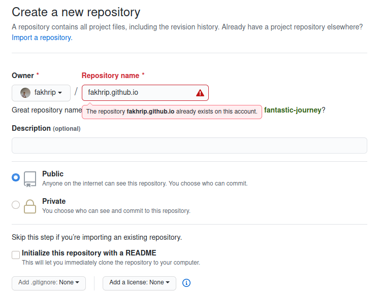
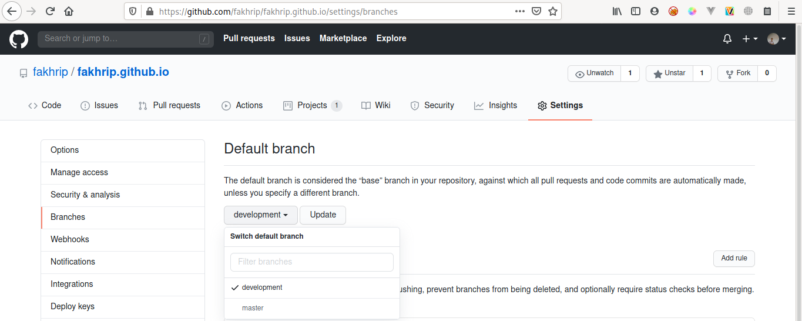
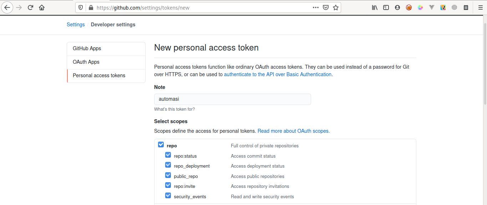
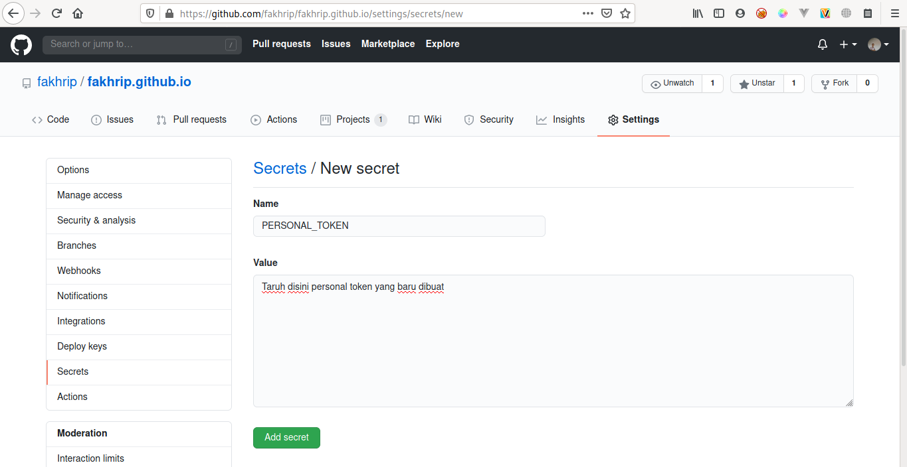

Mengautomasi pembuatan blog dengan menggunakan PAMDown combo
Di minggu yang tenang dan sunyi merupakan saat yang tepat untuk selalu mengexplore suatu hal yang baru, terlebih lagi akan sangat bagus jika dipakai untuk blogging karena hal ini bukan hanya meningkatkan seni menulis menjadi lebih baik juga bisa membuat CV lebih menarik 😎
Maka dari itu saya akan menyuguhkan satu artikel yang menurut saya sangat menarik bahasannya...
Kenapa sih automasi automasi terus
Dikarenakan ini merupakan pertama kalinya saya nge-blog dan saya sangat malas sekali jika harus membuat html pada tiap artikel yang saya buat.
ditambah gengsi pake wordpress :v
Loh, kan udah ada Jekyll / Gatsby / Static Site Generator lainnya ?
Jawabannya ya simpel bukan berarti saya mau "reinventing the wheel" tapi ya iseng aja mau sekalian mempelajari sistem baru sekaligus explore hal hal yang sebelumnya belum saya sentuh
Jadi, apa itu PAMDown ?
PAMDown merupakan singkatan yang saya buat buat (biasalah coder kalau lagi iseng wkwk),
P => Python (Menggunakan jinja2 dan markdown2)
A => Github Pages Actions
MDown => Markdown
Jinja pada python nya sendiri saya pakai sebagai HTML Templating agar bisa memasukkan variable pada python kedalam HTML Template yang sudah saya buat.
Markdown2 nya berguna untuk mengubah blog yang saya tulis menggunakan markdown agar menjadi HTML (dalam bentuk variable pada python) yang nantinya bisa dimasukkan kedalam HTML Template menggunakan jinja.
Untuk terakhir Github Pages Actions sudah jelas saya gunakan agar python script yang dibuat bisa dijalankan pada server github secara otomatis pada saat deployment, yaa bisa dibilang CI/CD kecil kecilan lah.
Talk is cheap, show me the code
Okee jadi tahapan intinya seperti berikut
1. Kita akan membuat sebuah HTML Template sebagai dasar HTML yang ingin ditampilkan
2. Lalu kita buat sebuah file markdown yang isinya merupakan sebuah artikel
3. Setelah kedua file tersebut telah siap maka kita buat python script untuk melakukan *magic* nya (seperti yang sudah saya katakan diatas)
4. Terakhir kita setup github actions .yml nya untuk mengautomasi build & deployment pada server github
5. Congratulation new skill acquired, PAMDown Combo 🤣
Let's execute the plan :
Contoh kodingan dibawah merupakan versi paling sederhana yang bisa kita buat, teman teman bisa juga melihat yang saya sudah buat pada repository saya, link nya dipaling atas yaa
HTML Templating menggunakan Jinja
Kita bisa menggunakan dengan cara paling simple yaitu menggunakan variable yang nanti akan kita berikan melalui python seperti berikut
HTMLTEMPLATE = """<!DOCTYPE html> <html lang="en"> <head> <meta charset="UTF-8"> <meta name="viewport" content="width=device-width, initial-scale=1.0"> <meta http-equiv="X-UA-Compatible" content="ie=edge"> </head> <body> <div> {{ contents }} </div> </body> </html> """Pada HTML Template tersebut terdapat
{{ contents }}yang berarti dia akan meminta contents yang nantinya bisa diberikan oleh python pada kodingan selanjutnya.Blog pada Markdown File
Sebagai contoh saja kita bisa buat file markdown (blog.md) seperti berikut
# Ini judul sangat besar ### lalu ini sub judul Dan disinilah kontennyaThe magic script of python :v
Disini kita buat sebuah script python yang akan menggunakan kedua file diatas yang sudah kita buat.
from jinja2 import Template import markdown2 HTMLTEMPLATE = """<!DOCTYPE html> <html lang="en"> <head> <meta charset="UTF-8"> <meta name="viewport" content="width=device-width, initial-scale=1.0"> <meta http-equiv="X-UA-Compatible" content="ie=edge"> </head> <body> <div> {{ contents }} </div> </body> </html> """ # Disini kita baca isi dari file markdown nya (blognya) with open('blog.md', 'r') as f : # Lalu kita konversi markdown menjadi html dengan 1 baris berikut markdown_yang_telah_dikonversi = markdown2.markdown(f.read()) # Setelah itu kita masukan markdown yang telah dikonversi menjadi variable `contents` yang akan dimasukkan kedalam HTMLTEMPLATE yang sudah kita buat html_akhir = Template(HTMLTEMPLATE).render(contents = markdown_yang_telah_dikonversi) # Terakhir kita tulis isi html_akhir kedalam sebuah file yang kita beri nama index.html sebagai html utama dari website kita indexFile = open('index.html', 'w') indexFile.write(html_akhir) indexFile.close()Mari berinama file python tersebut
magic.py.Github Pages Actions
Setelah semua file sudah siap, sekarang mari kita buat automasi pada tahap build dan deployment nya (CI/CD).
Kita buat dengan cara membuat repository baru dengan nama
username_github_mu.github.io.
Gambar diatas terdapat merah-merah error karena saya sudah memiliki repository yang sama.
Lalu kita inisialisasi direktori lokal, stage & commit semua file serta push ke server remote github nya dengan cara (dan jangan lupa kita harus push ke branch yang baru disini saya buat
development, alasannya akan saya kasih tau lebih lanjut dibawah).cd [folder projek nya] git init git add -A git commit -m 'first commit' git checkout -b development git push origin developmentLalu kita harus setup default branch nya ke branch baru yang tadi kita sudah buat seperti berikut.

Setelah itu kita bisa membuat file
gh-pages.ymlpada folder.github/workflows/di direktori projek nya seperti berikut.name: Automasi build dan deploy on: push: branches: - development # default branch jobs: build_and_deploy: runs-on: [ubuntu-latest] steps: - uses: actions/checkout@v2 - name: Setup Python uses: actions/setup-python@v2 with: python-version: '3.x' - name: Install dependencies run: pip install jinja markdown2 - name: Run magic script run: python magic.py - name: Deploy site uses: peaceiris/actions-gh-pages@v3 with: github_token: ${{ secrets.PERSONAL_TOKEN }} publish_dir: ./ publish_branch: master # deploying branchJika semua sudah komplit sekarang last but not least.
Kita buat personal token yang akan kita jadikan sebuah secret yang nantinya akan digunakan oleh file automasi .yml nya seperti berikut.


Setelah semuanya selesai lalu masuklah tahap akhir yaitu kita commit perubahan terakhir nya dan kita push dengan cara.
git add -A git commit -m 'second commit' git push origin developmentLalu secara otomatis web kamu akan tersedia di link
https://username_github_mu.github.io.CONGRATS, you have master the PAMDown combo
Last word
Semoga artikel nya mudah dipahami dan menyenangkan, jika memang dirasa bermanfaat silahkan sebarkan kepada yang lainnya agar ilmu nya tidak berhenti disini saja.
Terimakasih, mohon maaf bila ada kesalahan 🙏.